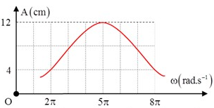
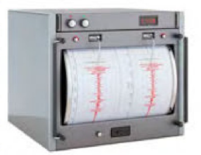

📋 Quy định làm bài
- Thời gian: 45 phút. Còn 10 phút hệ thống nhắc; hết giờ có thêm 5 phút gia hạn rồi tự động nộp.
- Bài làm ở chế độ toàn màn hình. Chuyển tab, mất focus, thoát toàn màn hình đều bị ghi nhận và báo cho giáo viên.
- Không dùng chuột phải, sao chép/dán, phím tắt. Trợ lý AI chỉ mở sau khi nộp bài. Phần tự luận: AI gợi ý điểm, giáo viên duyệt điểm chính thức.
PHẦN I. Câu trắc nghiệm nhiều phương án lựa chọn
Mỗi câu có 4 phương án, chỉ chọn một đáp án đúng (0,25 điểm).
1
Một vật dao động điều hòa sau 1 phút thực hiện 12 dao động thì chu kì dao động của vật là
2
Vật dao động điều hòa có li độ $x=4\cos(2\pi t)$ (cm). Biên độ dao động của vật là
3
Với T là chu kì dao động, f là tần số, ω là tần số góc, biểu thức liên hệ nào sau đây không đúng?
4
Trong sóng cơ, sóng dọc truyền được trong các môi trường
5
Vật dao động điều hòa biết trong một phút vật thực hiện được 120 dao động, trong một chu kỳ vật đi được 16 cm, viết phương trình dao động của vật biết t = 0 vật đi qua li độ $x=-2$ cm theo chiều dương.
6
Với a là gia tốc của vật dao động điều hòa, x là li độ dao động, ω là tần số góc, biểu thức nào sau đây là đúng?
7
Một con lắc lò xo gồm lò xo có độ cứng 100 N/m một đầu cố định, đầu còn lại được gắn với một vật nhỏ m đang dao động điều hòa với biên độ 5 cm. Động năng của con lắc khi vật qua vị trí cân bằng là
8
Sóng cơ không lan truyền trong môi trường nào?
9
Cho hai dao động điều hòa cùng tần số M và N, M có li độ là $x_1=4\cos\left(3\pi t+\frac{\pi}{3}\right)$ (cm) và N có li độ là $x_2=5\cos\left(3\pi t-\frac{\pi}{6}\right)$ (cm). Nhận xét nào sau đây đúng?
10
Sóng dọc là sóng mà các phần tử
11
Khi nói về sóng cơ, phát biểu nào sau đây sai?
12
Chu kì dao động của vật dao động điều hòa là
13
Cho vật dao động điều hòa có li độ $x=4\cos\left(\pi t+\frac{\pi}{4}\right)$ (cm). Li độ của vật lúc t = 0,5 giây là
14
Khi một vật dao động tắt dần thì
15
Vật dao động điều hòa có li độ $x=5\cos(3\pi t-\pi)$ (cm). Tần số góc của vật là
16
Một sóng cơ học có tần số 40 Hz lan truyền với tốc độ 360 cm/s. Bước sóng là:
17
Đối với con lắc lò xo dao động điều hòa, khi tăng khối lượng vật nặng lên gấp 4 lần thì
18

Một con lắc lò xo có khối lượng 100 g dao động cưỡng bức ổn định dưới tác dụng của ngoại lực biến thiên điều hoà với tần số góc ω. Đồ thị biểu diễn sự phụ thuộc của biên độ vào tần số góc ω của ngoại lực tác dụng lên hệ có dạng như hình vẽ. Lấy $\pi^{2}=10$. Độ cứng của lò xo làPHẦN II. Câu trắc nghiệm đúng sai
Trong mỗi ý a), b), c), d) chọn Đúng hoặc Sai. Đúng 1 ý: 0,1 · 2 ý: 0,25 · 3 ý: 0,5 · 4 ý: 1,0 điểm.
1
Một sóng cơ lan truyền trên mặt nước, người quan sát 10 ngọn sóng đi qua trước mặt trong khoảng thời gian 36 (s). Khoảng cách giữa hai đỉnh sóng kế tiếp là 12 m. Biên độ sóng là 3 cm.
a) Chu kỳ dao động là 3,6 s.
b) Sóng trên mặt nước là sóng dọc.
c) Bước sóng là 12 m.
d) Tốc độ truyền sóng trên mặt hồ là 3,3 m/s.
2

Máy đo địa chấn được sử dụng để phát hiện và đo đạc những rung động địa chấn được tạo ra bởi sự dịch chuyển của lớp vỏ Trái Đất. Tần số của những cơn địa chấn thường nằm trong khoảng 30 Hz – 40 Hz. Năng lượng từ các cơn địa chấn có khả năng kích thích con lắc lò xo bên trong máy đo làm đầu bút di chuyển để vẽ lên giấy như hình vẽ.a) Tần số dao động của những con lắc lò xo trong máy địa chấn vào khoảng 30 Hz – 40 Hz.
b) Để máy địa chấn ghi nhận được kết quả tốt nhất thì tần số riêng của con lắc lò xo phải có giá trị thật nhỏ so với con số 30 Hz – 40 Hz.
c) Đầu bút di chuyển và vẽ được lên tờ giấy là do các cơn địa chấn tạo ra dao động duy trì.
d) Dao động của con lắc lò xo trong máy địa chấn là dao động duy trì.
3
 Một vật có khối lượng 250 g dao động điều hòa có đồ thị động năng – thời gian như hình vẽ, lấy $\pi^{2}=10$.
Một vật có khối lượng 250 g dao động điều hòa có đồ thị động năng – thời gian như hình vẽ, lấy $\pi^{2}=10$.a) Biên độ dao động của vật là 20 cm.
b) Tại thời điểm vật có động năng bằng 3 lần thế năng thì gia tốc có độ lớn là 10 m/s².
c) Cơ năng của vật là 0,625 J.
d) Tần số góc của dao động là 10 rad/s.
4
Một vật dao động điều hòa với phương trình $x=4\cos(20\pi t+\pi/6)$ cm.
a) Tại thời điểm t =  s thì vật có li độ bằng 2 cm.
s thì vật có li độ bằng 2 cm.
s thì vật có li độ bằng 2 cm.b) Vận tốc của vật tại thời điểm t = s bằng 40 cm/s.
cm/s.
s bằng 40 cm/s.c) Pha ban đầu của dao động là $\pi/6$.
d) Biên độ của dao động điều hòa là 4 cm.
PHẦN III. Câu trắc nghiệm trả lời ngắn
Điền đáp số (có thể dùng dấu phẩy hoặc dấu chấm thập phân). Mỗi câu 0,25 điểm.
1
 Một vật nhẹ dao động điều hòa có đồ thị li độ - thời gian như hình vẽ. Tần số dao động của vật là bao nhiêu Hz? (Kết quả lấy sau dấu phẩy 1 chữ số.)
Một vật nhẹ dao động điều hòa có đồ thị li độ - thời gian như hình vẽ. Tần số dao động của vật là bao nhiêu Hz? (Kết quả lấy sau dấu phẩy 1 chữ số.) Hz
2
Một vật dao động điều hòa với tần số góc 10 rad/s. Khi vật qua vị trí có li độ 2 cm thì gia tốc của vật là bao nhiêu m/s²?
m/s²
3
Tại một điểm trên mặt chất lỏng có một nguồn dao động với tần số 120 Hz, tạo ra sóng ổn định trên mặt chất lỏng. Khoảng cách giữa 5 ngọn sóng liên tiếp là 0,5 m. Tốc độ truyền sóng là bao nhiêu m/s?
m/s
4
Một con lắc lò xo có độ cứng k = 10 N/m, một đầu cố định, đầu còn lại gắn vật m = 100 g dao động cưỡng bức do tác dụng của ngoại lực $F=8\cos\left(\frac{2\pi}{5}t-\frac{\pi}{2}\right)$ (F tính bằng N, t tính bằng s). Chu kì dao động cưỡng bức của con lắc là bao nhiêu? (tính theo đơn vị s)
s
5
Một con lắc đơn có chiều dài $l=1{,}2$ m dao động tại nơi có gia tốc trọng trường $g=10$ m/s². Chu kì dao động của con lắc là bao nhiêu s? (Làm tròn đến chữ số thập phân thứ 2 sau dấu phẩy)
s
6
Một vật khối lượng 300 g dao động điều hòa có chiều dài quỹ đạo là 8 cm. Trong thời gian 1 phút, vật thực hiện được 40 dao động. Động năng cực đại của con lắc là bao nhiêu mJ? (Làm tròn đến chữ số thập phân thứ 2 sau dấu phẩy)
mJ